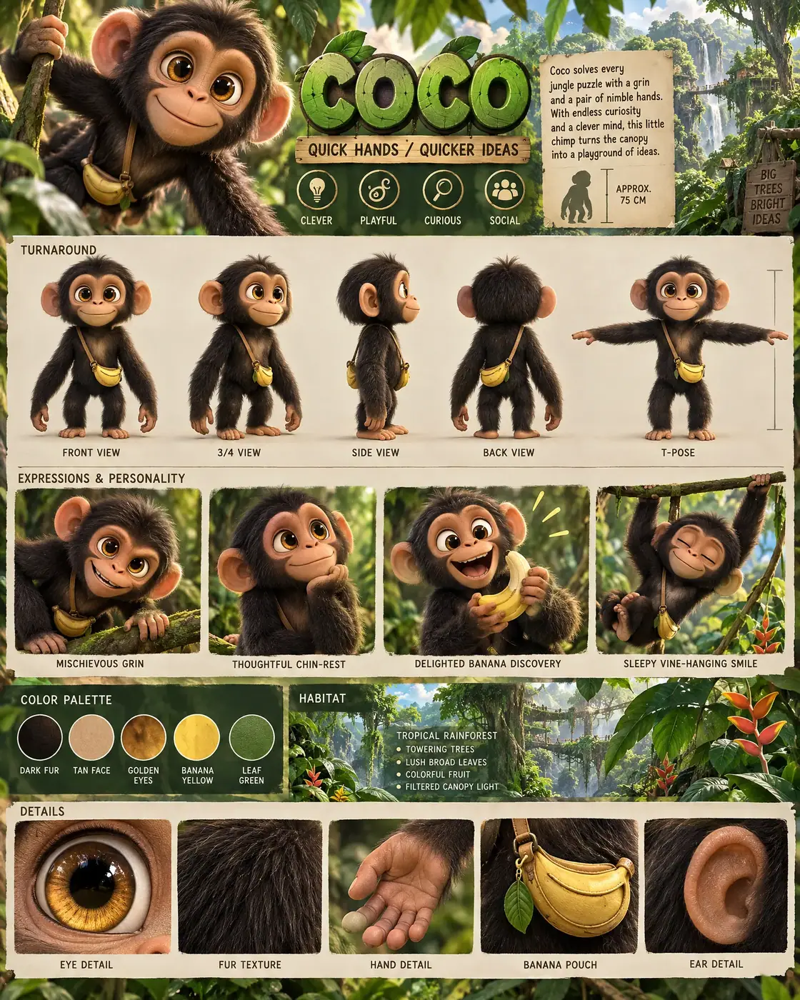

#36 of 100
Coco
Chimpanzee
Jungle & SavannaQUICK HANDSQUICKER IDEAS
- Species
- Chimpanzee
- Collection
- Jungle & Savanna
- Height
- 75 CM
- Personality
- CLEVERPLAYFULCURIOUSSOCIAL
- Colour palette
- DARK FURTAN FACEGOLDEN EYESBANANA YELLOWLEAF GREEN
- Expressions
- mischievous grin
- thoughtful chin-rest
- delighted banana discovery
- sleepy vine-hanging smile
- Detail panels
- EYE DETAIL
- FUR TEXTURE
- HAND DETAIL
- BANANA POUCH
- Character note
- Coco solving every jungle puzzle with a grin and a pair of nimble hands
Reference sheet prompt
Cute chimpanzee named COCO, with oversized golden-brown eyes, dark soft fur, a warm tan face, rounded ears, long flexible arms, and a tiny banana-shaped pouch. A clever canopy problem-solver high-end 3D animated feature reference sheet, portrait 4:5 board, original character, header “COCO” with tagline “QUICK HANDS / QUICKER IDEAS,” traits “CLEVER / PLAYFUL / CURIOUS / SOCIAL” full-body turnaround — front / 3-4 / side / back / T-pose, face markings, arms, pouch, ears, and proportions consistent, labels beneath each view row of 4 expressions: mischievous grin, thoughtful chin-rest, delighted banana discovery, sleepy vine-hanging smile palette swatches DARK FUR, TAN FACE, GOLDEN EYES, BANANA YELLOW, LEAF GREEN tropical rainforest habitat accents with vines, broad leaves, colorful fruit, and filtered canopy light in the information band, approximate height “APPROX. 75 CM,” bio about Coco solving every jungle puzzle with a grin and a pair of nimble hands bottom macro panels labeled EYE DETAIL, FUR TEXTURE, HAND DETAIL, BANANA POUCH 8k render, expressive long arms, chibi proportions, no extra chimpanzees, no logos